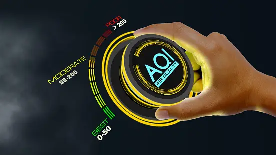
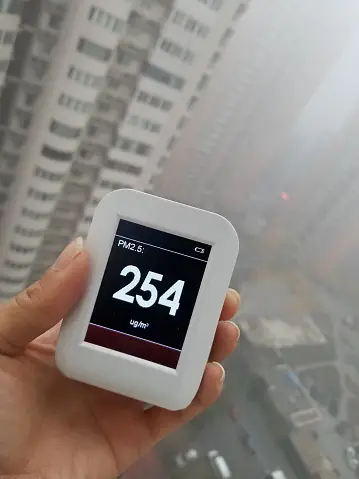

Unlike weather prediction, which focuses on future atmospheric conditions, Air Quality Monitoring (AQI)
tracks the current state of the air we breathe.

Similar to weather data collection, AQI monitoring relies on a network of ground stations and satellites. These stations measure pollutants like ozone and particulate matter (PM2.5), providing real-time data on the Air Quality Index (AQI)
Computer models are used to simulate the atmosphere by solving mathematical equations that describe the physical processes that occur in the atmosphere.
The models take into account a variety of factors, including temperature, pressure, humidity, and wind speed.
The AQI simplifies this data into a color-coded system, allowing you to quickly understand how healthy the air is to breathe. Many government agencies and independent organizations provide online resources to check the AQI in your area.
For example, you can find the current AQI for Chandigarh, India on aqi.in.
Data Collection: Just like weather prediction, air quality monitoring relies on a network of ground stations and satellites:
Ground-based Monitoring Stations: These stations measure pollutants like ozone and particulate matter (PM2.5), providing real-time data on air quality.
Satellites: Satellites can detect air pollutants and track their movement over large areas.
Data Processing: The data from these sources is collected and processed to create a comprehensive picture of air quality.
Online Resources: Many government agencies and independent organizations provide online resources to check the AQI in your area.
For example, you can find the current AQI for Chandigarh, India on aqi.in.
Air Qualitity Monitoring is a complex process that involves a variety of different disciplines, including physics, mathematics, and computer science. However, the basic principles of AQI are relatively simple:
The atmosphere is a fluid, and it behaves in accordance with the laws of physics.

The Air Quality is constantly changing, and these changes are driven by a variety of factors, such as the Particulate Matter, the Ozone Layer, and the presence of various and other gases in the air.
By understanding the physical processes that drive the AQI, scientists can develop computer models that can simulate how the AQI will effect the Living diversity.
AQI Monitoring System is a vital tool for a wide range of applications. By providing accurate AQI, meteorologists can help to protect lives and property, and to save money.